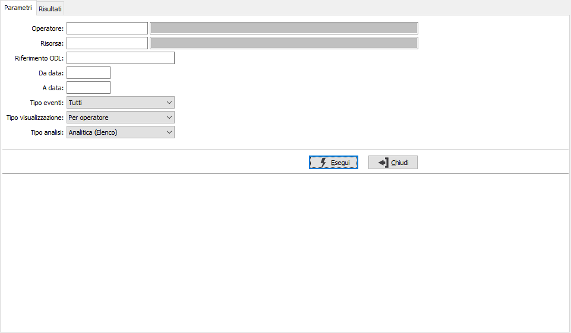
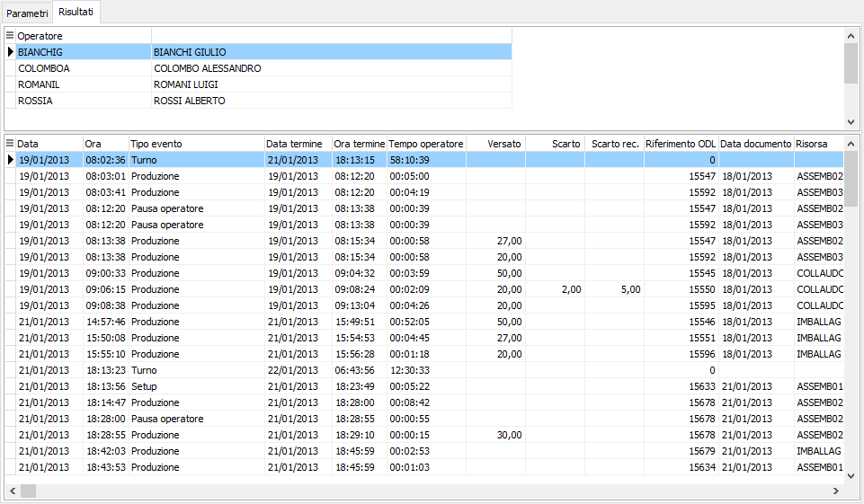

Analisi eventi
La funzione consente di visualizzare per ODL, per operatore e per risorsa l’elenco degli eventi registrati attraverso l’applicazione OS1BMJob che siano già stati elaborati ed assegnati evidenziando i tempi e le quantità rilevate. E' possibile specificare operatore, risorsa, un singolo riferimento ODL, un range di date; è possibile specificare la tipologia degli eventi da analizzare e nell'elenco sono presenti delle categoria che contengono tipi diversi, ma omogenei come gli eventi relativi agli operatori o gli eventi relativi alla produzione; si può definire il tipo di visualizzazione ed il tipo di analisi; relativamente a quest'ultimo parametro può essere interessante l'analisi di tipo cronologico che per ogni giorno riporta gli eventi ordinati per ora tipo agenda.

Confermando tramite la pressione del bottone Esegui, viene avviata la selezione e richiamata la finestra video Risultati, dove vengono mostrati gli eventi selezionati; la parte superiore cambia a seconda che si sia scelto l'ordinamento per risorsa, per operatore o per ODL; la parte inferiore a seconda che si sia scelto il tipo analisi analitica, cronologica o sintetica; tramite il tasto destro del mouse è possibile esportare il contenuto della griglia in Excel o negli appunti. Utilizzando i bottoni Anteprima o Stampa presenti nella toolbar è possibile effettuare la stampa dei dati elaborati.
